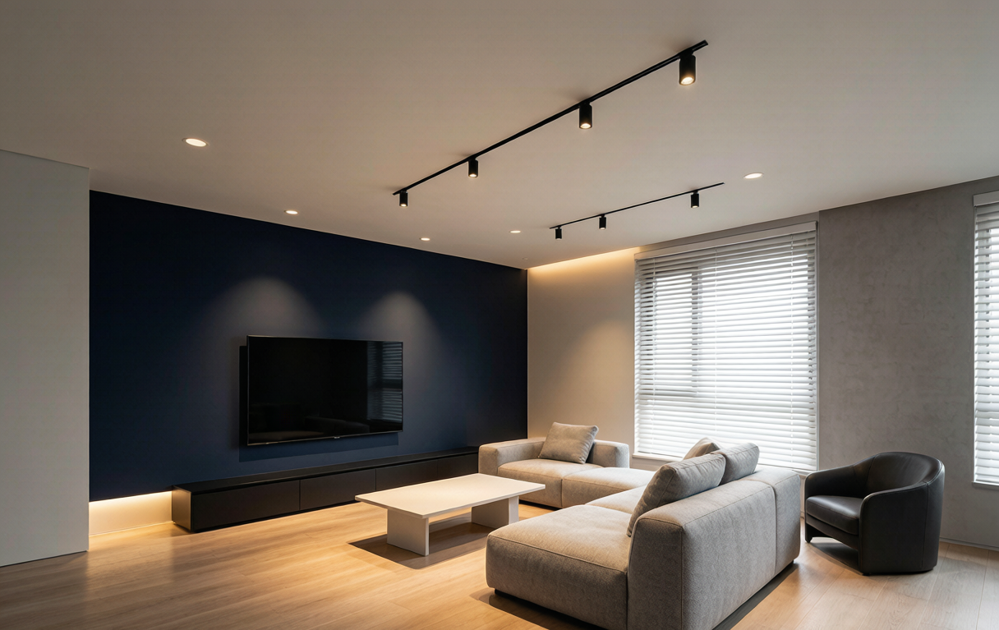
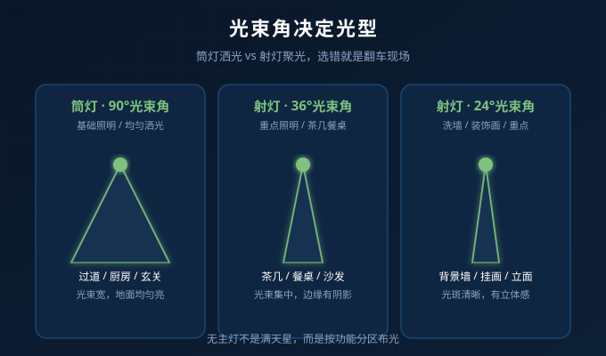
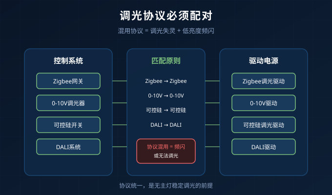

无主灯翻车的真相
打开社交软件，搜索“无主灯翻车”，能刷出一堆血泪案例：
- 天花板上密密麻麻全是筒灯，像满天星；
- 茶几亮到反光，沙发却暗得像地下室；
- 同一空间里的灯，有的发黄、有的发蓝，像临时凑的；
- 调光时部分灯不亮，或者低亮度下疯狂频闪。
很多人把锅甩给设计师，其实大多数翻车不是设计问题，而是产品参数没选对。我接触过几百个无主灯项目，发现90%的失败案例都栽在三个细节上：光束角、驱动协议、显色指数。
下面一个一个讲清楚，帮你下次选灯不再踩雷。
细节一：光束角选错，筒灯射灯乱用
无主灯的核心不是“没有主灯”，而是用不同光束角的光源，分层照亮空间。筒灯和射灯看起来很相似，但发光方式完全不同：
| 类型 | 光束角 | 适合场景 | 常见翻车 |
|---|---|---|---|
| 筒灯 | 60°-90° | 过道、厨房、玄关等均匀照明 | 用来洗墙，光斑摊成一片 |
| 射灯 | 15°-36° | 茶几、餐桌、装饰画重点照明 | 用来当主灯，区域外全是阴影 |
筒灯是“洒光”，射灯是“聚光”。 很多套餐图省事，全屋用一种灯，客厅用射灯导致边缘发黑，走廊用筒灯导致墙面没有立体感。
正确的做法：先确定每个区域的功能，再选光束角。比如沙发上方用36°射灯打亮茶几，走廊用90°筒灯保证通道亮度，背景墙用24°射灯洗墙出光斑。

细节二：驱动协议没配对，调光等于摆设
无主灯通常要做调光，营造不同场景。但调光不是买个智能开关就能搞定的事，最终能不能顺滑调光，取决于驱动电源和控制系统是否匹配。
常见协议有五种：
- 开关/非调光：最基础，不能调光，但稳定性最高；
- 0-10V：工程和商业项目常用，需要额外布信号线；
- 可控硅：可以直接替换旧墙装调光开关，但低端调光器容易频闪；
- DALI：适合大型项目，单灯单控，但系统复杂；
- Zigbee/蓝牙Mesh：智能家居首选，可场景联动。
最容易翻车的组合是：墙面买了可控硅调光开关，灯具却配了普通驱动。结果要么不能调光，要么调到低亮度就开始闪。
如果你要做Zigbee全屋智能，就从头到尾用Zigbee调光驱动；如果是旧房改造保留原有调光开关，就确认灯具支持可控硅调光。协议混用，是低亮度频闪的头号元凶。

细节三：显色指数和色温不一致
无主灯是多个光源共同工作，一旦参数不一致，高级感立刻崩塌。
显色指数（Ra）决定颜色还原能力。 同样是白色墙面，Ra80和Ra98的灯打出来，质感完全不同。餐厅、化妆区、阅读区建议Ra≥95，普通过道Ra≥90即可。我们耐利普的COB射灯系列做到Ra98，就是为这类对光品质要求高的场景准备的。
色温一致性同样关键。 标称3000K的灯，不同品牌实际可能偏2800K或偏3200K。同一个开放空间里，建议同一批次、同一品牌采购，否则会出现“有的黄、有的白”的尴尬。
小经验：无主灯设计尽量把色温种类控制在两种以内，比如公共区4000K，卧室区3000K，这样大脑更容易觉得“这个空间是舒服的”。
已经装好了，还能补救吗？
可以，按这个顺序来：
- 先换射灯/筒灯：光束角选错的灯具，直接换成匹配角度的；
- 再换驱动：调光不顺的，确认协议匹配后更换驱动；
- 统一色温：把明显偏色的灯换成同品牌、同色温批次；
- 调整数量：不是灯越多越好，重点照明靠射灯，基础照明靠筒灯，留白区域让空间有呼吸感。
总结：无主灯选灯 checklist
- 按功能选光束角：基础照明用筒灯，重点照明用射灯；
- 调光协议要统一：Zigbee、0-10V、可控硅、DALI，别混用；
- 显色指数 Ra≥95，同一空间色温种类不超过两种；
- 同一空间尽量同一品牌，避免批次色差；
- 低亮度测试：收到灯后先调到10%，看是否闪烁、是否稳定。
无主灯不是把主灯拆掉换成小灯，而是一个系统工程。把这3个细节做对，翻车概率能降一大半。
如果你正在做无主灯方案，不确定选什么光束角、驱动协议或色温，可以联系耐利普科技工程团队：138-2549-6855，我们根据你的吊顶布局和用光习惯，给出具体的灯具配置建议。